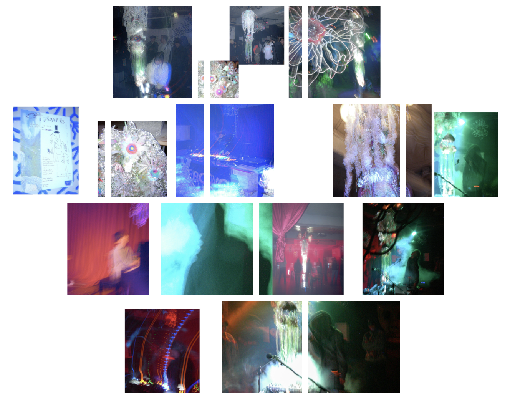

"Ott Yarris"から初めての音楽空間の提案。
2025年2月23日(日)、札幌PROVOにてDJやトラックメイクを手掛けるiichiro tayaの新たなプロジェクト "Ott Yarris" による同名のパーティ「Ott
Yarris」が初開催された。
ライブアクトとして東京から内省的でありながらオープンな表現を持つSSW・松永拓馬、愛知からレーベル〈UkiukiAtama〉を主催する電子音楽家・woopheadclrmsを迎え、ローカルアクトとしてテクノ・ユニット
LAUSBUB(@officialausbub)としても活動するMei
Takahashi、SADFRANKにSyn./Co-Arrangementとしても参加しており、ライブでは即興のピアノと電子音を交差させパフォーマンスを行うYuichi Yonezawaが出演。
DJとしてはクアラルンプールとニセコを行き来し、国やジャンルを超えた広いネットワークを築くbb.bulan、PROVOやSalonタレ目を拠点にYOND、bloomを主催しながらCYKからもMixをリリースするKATANAを迎え、"OttYarris"主催のiichiro
tayaも出演。
さらに、フロア装飾にはProp Designとして異世界の自然のような立体作品を制作する北海道拠点の作家Asumi
Maeda、フライヤーは東京を拠点に絵画・立体・ドローイングなどを横断するタトゥーアーティストCCHが制作。
フライヤーの印刷は札幌のTATA PRES(@_tatapress_)によるリソフラフでの印刷となっている。
当日の作品や空間の様子は、札幌在住の写真家 Mai Kimura(@qqqmqi)によってアーカイブ。
